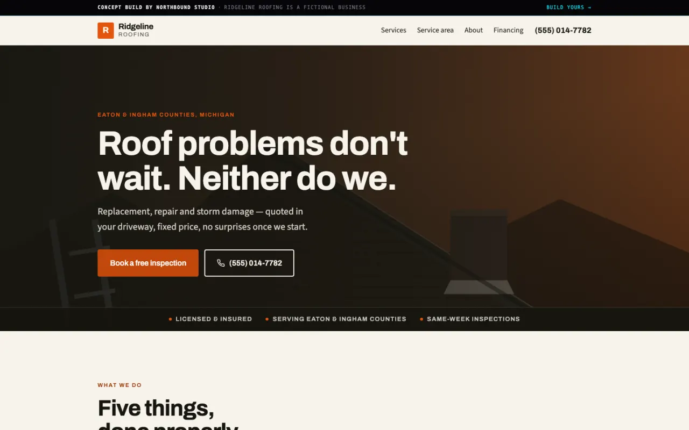
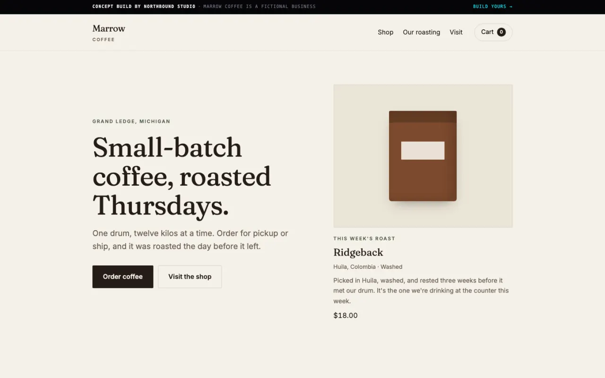

Grand Ledge, Michigan
We build the machine that brings customers in.
The website is the front of it. The booking, the follow-up, the payments and the dashboard behind it are the part that pays for itself.
The market
Most local websites just sit there.
They load slowly, can't take a booking, and forget the customer the moment they leave.
That is the whole opportunity, and it is not a hard one to see. What is hard is building the part that comes after the page — the thing that answers at nine on a Sunday, quotes the job, takes the deposit and remembers to ask for the review. That is what we sell. The site is how you get to it.
The offer
Three ways in.
-
Beacon
$3,500
For the business that just needs to look real.
- Custom-built site, up to five pages, no template
- Brand identity: logo, type, colour
- Copywriting, photography direction, local SEO
- Two weeks, 50% up front
-
Engine
$8,500
The site plus the machine behind it.
- Everything in Beacon
- Booking or quote flow, payments, lead capture
- Automated follow-up, reminders, review requests
- Owner dashboard: where the calls came from, what they were worth
- Three to four weeks, 50% up front
-
Bearing
$600 per month
Attached to every project. Never optional in the pitch.
- Hosting, monitoring, backups, unlimited small edits
- Dashboard kept live, automations maintained and expanded
- Monthly report on calls, bookings and revenue
- Twelve-month term, billed monthly
Published prices are a floor, not a ceiling. What a build is worth follows from what one new customer is worth to you — not from how many hours it takes us.
What we sell
Twelve things, and what each one does for you.
The website is the front of it. These are the parts behind it — the ones that answer, quote, book, take the deposit and remember to ask for the review. Scroll through them, or open any one.
-
01
A custom site
A site built for your business rather than adapted from someone else’s, so it says what you do in the first five seconds.
-
02
Brand identity
A logo, a typeface and a colour that work on a van, a business card and a phone screen without being redrawn each time.
-
03
Booking flow
Customers pick a time themselves, at eleven at night, without anyone answering a phone.
-
04
Quote flow
People tell you what the job is before you drive out to look at it, so you quote the ones worth quoting.
-
05
Payments
Deposits land before the work starts, which is the rule that prevents most of the ways small projects go wrong.
-
06
Lead capture
The people who almost called you leave a name instead of leaving.
-
07
Automated follow-up
Every enquiry gets an answer within a minute, including the ones that arrive while you are on a roof.
-
08
Reminders
Fewer no-shows, because the appointment reminds them and not you.
-
09
Review requests
The review gets asked for at the one moment the customer is happiest, every time, without you remembering.
-
10
Owner dashboard
One screen that says where the calls came from and what they were worth, so you stop guessing which advert works.
-
11
Local SEO
You turn up when someone two towns over searches for what you do.
-
12
AI intake and auto-responder
Enquiries get read, sorted and answered in your voice before you have opened the laptop.
How we work
- 50% up front, always. No deposit, no work.
- Every proposal includes Bearing. It is part of the build, not an upsell.
- Concept work is labelled as concept work. Every performance number is one we measured.
Two things we built. Open either one.
The front is the part you can see, and the front is the easy half. What you are paying for is underneath it — the part that takes the booking, checks the price, and keeps the lead when something downstream breaks. Both of these are deployed and both of them run that code. Click either one and use it.
-

Concept build · invented business
Ridgeline Roofing
A trades site built around one job: booking the call.
What is behind it
- Customers book the call on the site itself — it doesn’t just open their email app.
- The booking reaches you even if the email breaks. It’s saved first, then sent.
- Nobody can send a booking without a name and a number to call back.
Online booking · no lost leads
Open the build
-

Concept build · invented business
Marrow Coffee
A small storefront with real checkout and no plugin sprawl.
What is behind it
- Card payments run through Stripe, set up so nobody can get at your payment account from the website.
- The price is checked on our server, so nobody can edit their cart to pay less.
- Every paid order is checked with Stripe and recorded, so you see exactly what came in.
Online store · card checkout
Open the build
The numbers on this page measured themselves.
of a frame, at the median, with headroom left over.
| Act | What it is | p95, in milliseconds |
|---|---|---|
| Northlight | Aurora curtain | |
| Drift | GPU particle field | |
| Solution | Type through fluid | |
| Offerings | Twelve loops on a helix |
Measured by scripts/perf.mjs
against this URL under DevTools throttling — a simulated 4G connection
and a 4× CPU slowdown, on a 390×844 viewport. Not a
Lighthouse estimate, and not typed by hand. The frame figure is real
frame-to-frame interval; the per-act figures are command submission,
not GPU execution, because
EXT_disjoint_timer_query is unavailable on most hardware
and nothing here will claim a measurement it cannot take. The
raw artifact records the renderer
and the quality tier it was measured on.
Tell us what the job is.
The useful first question is what one new customer is worth to you, and how many more you want a month. The answer decides the build.
On your project